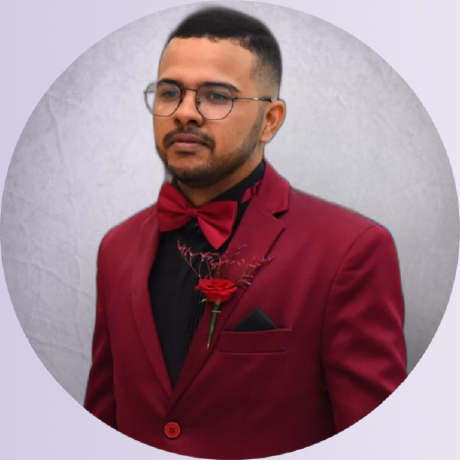

Olá, seja bem vindo(a), eu sou
Ewerton Pereira
Suporte Técnico de TI.

Sobre mim!
Me chamo Ewerton Pereira, sou técnico em Redes de computadores e graduando no curso de Gestão TI pela Unintese. Desenvolvo páginas responsívas e de layout atrativo. Tenho uma trajetória de cerca de 8 anos trabalhando com suporte técnico, manutenção de computadores, administrador de redes e servidores, o que me tornou um profissional dedicado e organizado. Hoje na área de desenvolvimento vivo o aprendizado continuo. Busco oportunidades de melhorias no mercado da tecnilogia.
